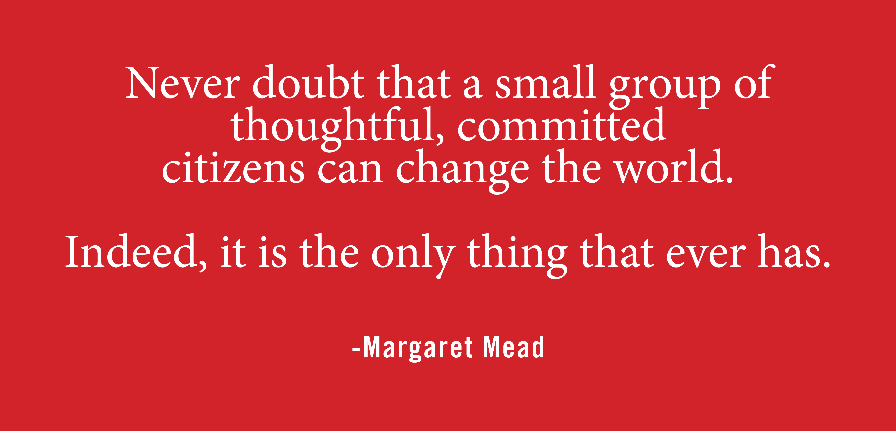

Our Mission
Citizens for Rational Government is a grassroots Political Action Committee trying to raise awareness and promote education about rational, non-extremist choices for how we govern our society and promote democracy in the U.S.

What We Believe
- The majority of Americans want a stable, rational government that focuses on real problems and solutions, not the extreme positions
- Most Americans agree on balanced, rational solutions to most of our problems—our populace is not as divided as our current politicians say
- Effective ideas emerge from both the Republican and Democratic side of the aisle, as well as Independent positions. Unfortunately the extreme platforms of both Parties have gotten the attention and driven the conversation, overshadowing these rational solutions
- The radicalized direction of the country in the early-21st-century is unsustainable, unless the majority of Americans speak up and demand change
- Our current system encourages extremism in both parties. Low turnout in our primary elections too often allows small groups of political activists to determine the candidates in general elections. And the timing of the primaries so early in the election cycle adds to the overall apathy and confusion amongst voters. Media often focuses on the extreme candidates and positions, as it sells better than rational content.